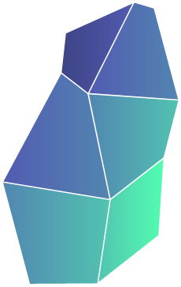

Most companies don't know where they actually stand.
They invest in tools, hire talent, and run initiatives — yet growth stalls, decisions slow down, and the same bottlenecks keep coming back. The reason is almost always the same: blind spots in organizational maturity.
At Tektit, we build market leaders. Not as a tagline — as a track record. As industry veterans, we've lived inside high-performing organizations, learned what separates the best from the rest, and distilled that experience into a proven approach. We've applied it successfully with 40+ companies. Now we're putting it in your hands.
The Tektit Maturity Check gives you an honest, structured snapshot of your organization across 12 critical dimensions — from Leadership and Sales to AI readiness and Data Sovereignty. In under 10 minutes, you'll see exactly where you're strong, where you're losing leverage, and what to fix first.
No fluff. No consultant-speak. Just clarity.
Note: This evaluation engine is explicitly optimized for digital-first and service-oriented organizations.
How to use this tool
Select your organization's primary business profile:
The assessment definitions adapt dynamically to match your specific operational ecosystem realities.

Almost there!
Where can we send your detailed report? (Optional for this test)
Your results

Maturity radar
🚀 Your top 3 focus areas
These are the areas with the greatest optimization leverage.
* Note: Focus areas are ranked based on calculated optimization leverage (combining your current implementation gap with the dimension's strategic business impact weight), not strictly by raw score.